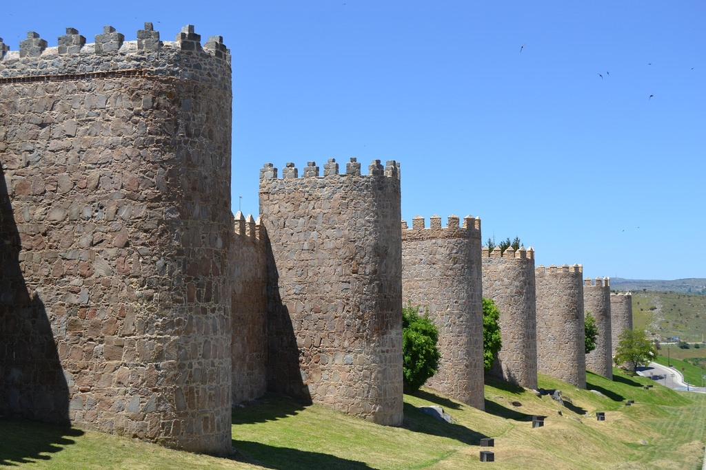

| Provincia: Ávila | Superficie: km2 | Población: ( hab./km2) |  |
| Municipio(s) visitado(s): | Superficie: km2 | Población: ( hab./km2) | |
| Distancia recorrida: | Fecha: | Duración: | |
| Arquitectura civil: | |||
| Arquitectura religiosa: | |||
| Museos: | |||
| Naturaleza: | |||
| Otros: | |||
La provincia de Ávila, limítrofe con la de Madrid (al igual que Toledo y Segovia), se encuentra en Castilla y León. Ávila es una ciudad cuyo centro histórico se encuentra dentro de un recinto amurallado de unos 3 km. Llegué a Ávila tras 1 hora y 30 minutos de trayecto aproximadamente, abordo de un tren media-distancia. Se trataba de un tren con destino Salamanca y que hacía parada en Ávila, entre otras, como El Escorial.
Durante el trayecto destacan los paisajes montañosos que en esta época del año ya son completamente verdes, con algunas vacas y otras reses. Logré ver el Monasterio de El Escorial desde la ventana del tren aunque con tamaño minúsculo ya que queda bastante lejos, así como la cruz de El Valle de los Caídos. Por aquella zona, durante varios kilómetros de vía y junto a esta, se podían observar muchísimas flores de color rojo (amapolas), amarillo (¿margaritas?) y violetas, curiosamente los colores de la bandera de la II República.
Me bajé en mi parada, Ávila, y el tren siguió su destino hacia Salamanca. Saliendo de la estación continué todo recto hasta que encontré los primeros indicativos turísticos. Tras unos 10 minutos andando, llegué a las inmediaciones de la muralla y la Basílica de San Vicente. Tomé algunas fotos y me dirigí a la oficina de turismo, de varias plantas, donde había algunas maquetas de la muralla y otros carteles informativos.
Al salir de la oficina, caminé unos metros y enseguida dí con una de las múltiples puertas y arcos de la muralla, en este caso el Arco del Mariscal. Es una zona alta desde la que se ven los campos que rodean Ávila. Le pedí a unas chicas que también se veía que hacían turismo que me sacaran una foto usando como fondo la muralla.
A continuación crucé la muralla por dicho arco y me dediqué a callejear sin un rumbo concreto, llegando a la Plaza del Mercado chico, donde se encuentra el Ayuntamiento. Seguí andando, pasando por delante del Archivo General Militar de Ávila y algún edificio religioso. Vi los indicativos para llegar a Los 4 Postes, un punto elevado a las afueras desde la que se ve las murallas al completo, por lo que seguí dicho rumbo para tomar algunas fotografías. Pronto llegué a los límites de la muralla y a otra de sus puertas, cruzándola esta vez hacia afuera.
En días anteriores había explorado en Google Maps cómo llegar a Los 4 Postes, situado en un lateral de la carretera que lleva a Salamanca, pero sobre el terreno a veces las cosas no son tan evidentes. En las inmediaciones estaba el río Adaja, que hay que cruzar ya que Los 4 Postes están en la otra margen. Tan solo veía un puente para coches sin acera, que no me atrevía a cruzar. Supuse que debía haber otro modo de llegar allí así que merodeé un poco por la zona, sin éxito. Entonces vi a un hombre con mochila y pelo largo y blanco, al que saludé, ya que parecía buscar también algo. Se trataba de un peregrino que me comentó que estaba haciendo el Camino de Santiago al revés, partiendo de Santiago para llegar a la zona de Levante, concretamente Alicante. Le pregunté si sabía cómo llegar a Los 4 Postes y me dijo que él venía de allí justamente. Me explicó que había un puente peatonal camuflado detrás de unos arbustos, de ahí que no lo viera. Tras charlar un par de minutos más, me despedí y crucé ya hacia el otro lado, llegando enseguida a Los 4 Postes, desde donde tomé algunas fotografías panorámicas de Ávila.
Ya era la hora de comer así que me quedé en las proximidades del río Adaja, donde encontré un merendero con algunas mesas y bancos de piedra completamente vacío y allí me senté a comer a la sombra, pues el sol apretaba bastante. Después tomé algunas fotos del río y me puse de nuevo en marcha para seguir recorriendo la muralla por la parte externa. Llegué a otra de sus puertas y accedí al interior nuevamente, llegando a la Plaza de la Santa. Seguí andando hasta llegar a la Catedral que solo vi por fuera y compré unas postales en una tienda cercana.
Callejeé un poco más y luego ya puse rumbo de vuelta hacia la estación.
{kind=link}